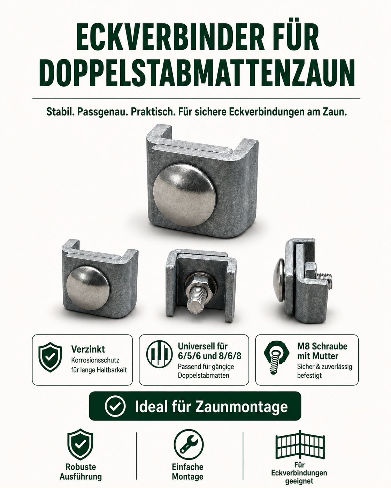
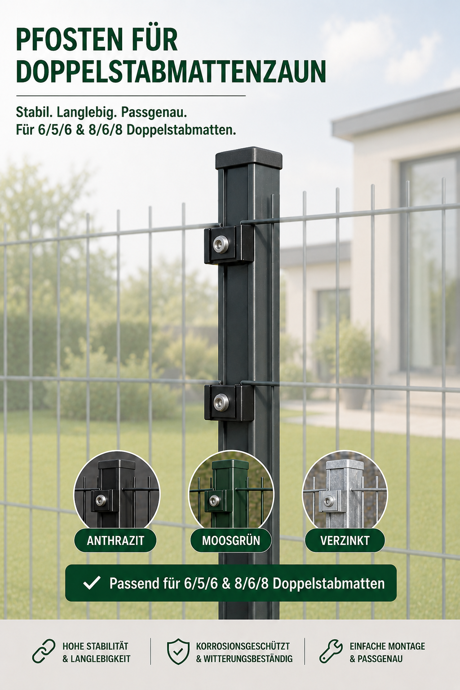

{{ step.number }}
{{ step.kicker }}
{{ step.title }}
{{ step.text }}
{{ step.signal }}E-Commerce · Customer Journey · UX · SEO
I connect customer understanding, data and implementation so digital systems become clearer, more intuitive and more useful for real people.
Flagship case · Shopify
This customer journey case connects price orientation, project planning, installation help, privacy-screen configuration and cart protection into one coherent path.
{{ step.kicker }}
{{ step.text }}
{{ step.signal }}Product / tool demos
These short clips show how the journey works in practice: quick orientation first, then planning support, then optional privacy-screen configuration.
01 · Price orientation
Visitors can quickly compare project cost expectations before they commit to a full configuration flow.
02 · Project planning
The configurator translates length, height, gates, corners, mounting and accessories into a guided project setup.
03 · Personalized extension
Customers can add privacy screening, test patterns and continue the same fence project instead of starting over.
Visual decision support
These source visuals show how product communication was structured for understanding, consistency and decision support. They stay intentionally smaller so they support the case instead of overpowering it.


Recruiter work evidence
Choose a field and the evidence below filters itself to relevant problems, actions and learnings.
| Work | System | Problem | What I did | What I learned |
|---|
About me
I am a hands-on e-commerce and SEO specialist from Germany. My strongest work happens when I can understand how a customer thinks, use data to identify friction and then turn the insight into an actual digital change.
I started in SEO and moved deeper into e-commerce, customer journeys, analytics and technical implementation. I am not looking for a manager title. I want to contribute inside a strong international team, keep learning from experienced specialists and continue building practical technical depth.
Based in Germany · Open to remote international opportunities · Long-term goal: New York